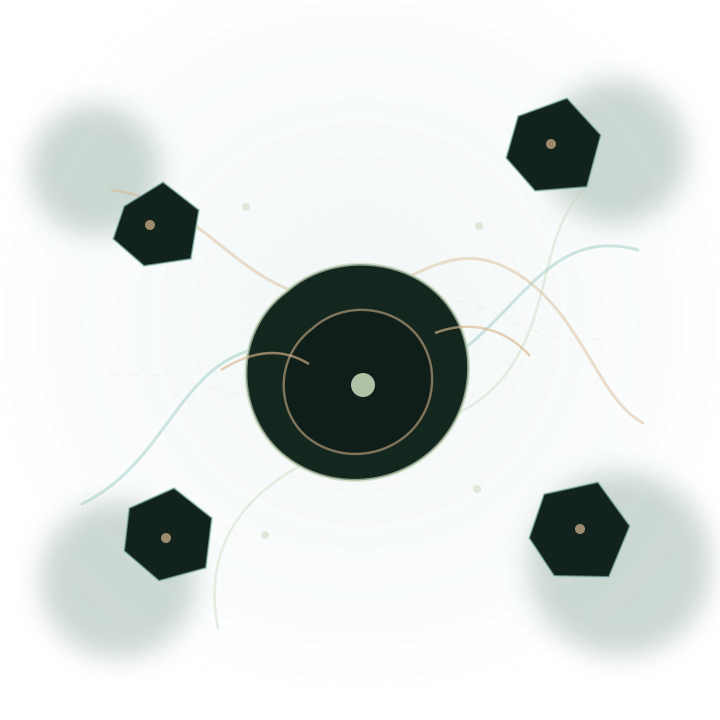

Persönlich
Kontext und Entscheidungen bleiben verständlich und dem Menschen zugeordnet.
KI UND MENSCH. ZUSAMMEN. ETHISCH.
Bessere Entscheidungen entstehen in Zusammenarbeit zwischen KI und Mensch.
Wir verbinden Quellen, Annahmen, Ideen und Entscheidungen zu einem nachvollziehbaren Weg, der geprüft, korrigiert und gemeinsam weiterentwickelt werden kann.
Frühe Entwicklungsphase. Keine fertige Plattform und keine erfundenen Erfolgsgeschichten.
Kontext und Entscheidungen bleiben verständlich und dem Menschen zugeordnet.
Quellen, Annahmen, Gegenargumente und Korrekturen bleiben sichtbar.
Bausteine wachsen vom kleinen Arbeitsprozess bis zur größeren Engine City.
Menschen denken, prüfen und entscheiden gemeinsam statt nebeneinander.
01 / WARUM REASON?
In komplexer Arbeit verschwimmen Fakten, Vermutungen, Quellen und Beschlüsse schnell zu einer überzeugenden Wolke. Reason Engine gibt jedem Teil wieder eine sichtbare Adresse.

ATLAS / ENGINE CITY
Atlas macht Projekte, Beziehungen, offene Fragen und Entscheidungen als begehbare Struktur sichtbar.
Konzept in Entwicklung02 / WIE WIR ARBEITEN
Die Engine wird dort strenger, wo aus einer Idee eine Behauptung, eine Entscheidung oder eine Handlung wird.
Problem, Kontext, Beteiligte und bisherige Entscheidungen aufnehmen.
Fakten, Interpretationen, Annahmen und offene Fragen sichtbar auseinanderhalten.
Quellen, Gegenargumente, Risiken und Unsicherheit ernsthaft testen.
Eine verantwortbare, vorläufige und später korrigierbare Entscheidung treffen.
REASON LAB
Hypothesen dürfen hier offen bleiben, scheitern und neu zusammengesetzt werden, bevor sie in den stabilen Kern gelangen.
Research in progressDISCOVERY JOURNAL
Beobachtungen, Irrtümer und Entscheidungen werden nicht hinter einer glänzenden Oberfläche versteckt.
Kanonischer Forschungsweg03 / OPERATING PRINCIPLE
Struktur schützt die Freiheit des Denkens, statt sie zu begrenzen.
Ideen dürfen springen, widersprechen und unfertig bleiben.
Behauptungen zeigen Quellen, Unsicherheit und Gegenargumente.
Je größer die Wirkung, desto stärker Freigabe und Auditspur.
ERSTER KOMMERZIELLER PILOT
Ein begrenzter Arbeitsprozess für eine konkrete, wiederkehrende Recherche- oder Entscheidungsfrage. Kein Plattformverkauf, sondern ein überprüfbarer Versuch an einem echten Problem.
Entscheidungsweg und Reibungsverluste verstehen.
Fakten, Annahmen, Quellen und Risiken ordnen.
Eine klare und prüfbare Übersicht erstellen.
Vorlage und Nachbesprechung für den nächsten Fall.
04 / AKTUELLER STATUS
Wir zeigen nur, was bereits belegt ist, und markieren offen, was noch Hypothese oder Entwurf bleibt.
KONTAKT
Schreib uns kurz, woran eine Recherche oder Entscheidung gerade festhängt.